./gui.sh
Set up, test and run a migration from your browser.
A local web page over the same script. It writes the .env file for you, checks the SSH and database logins before anything runs, and shows each step as it happens.

Start the GUI
From the script folder, on the machine that will host the copy. You need everything the command line needs, plus python3 3.8 or newer.
./gui.sh # opens http://127.0.0.1:8765/#token=… in your browser
./gui.sh --port 9000 --no-browser # another port; just print the URL- The terminal prints the address with a token. Open that exact link. The token changes every time the GUI starts.
- If port 8765 is busy, the next free one (up to 8784) is used; the printed link shows which.
UMS_GUI_PORTsets the default port. - Stop the GUI with Ctrl-C in its terminal. Migrations that are already running keep going and show up again when you restart it.
migrate.sh and reads the logs the script writes. Nothing it does is GUI-only, so every run can be repeated from a terminal.From an empty form to a finished run
Seven stops, in the order you meet them the first time.
Create a migration
A migration is one env file: one remote site copied to one local site. The sidebar lists them, and New migration adds one.
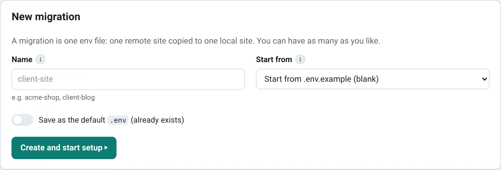
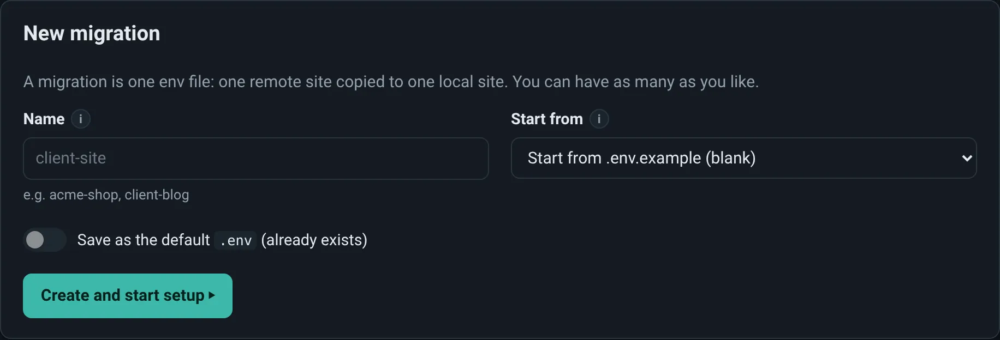
- default is
.envin the script folder, the file./migrate.shuses without options. - Any other name is saved as
sites/<name>.envand runs with./migrate.sh --env sites/<name>.env. Names use lowercase letters, numbers,-and_. - Start from can copy an existing migration. Handy for staging and production of the same site: change only what differs.
- New files start from
.env.example, so its comments are kept. They are written with mode 600 and are git-ignored.
Fill in the setup wizard
Six sections and a review page. They are not locked: jump to any of them from the bar at the top. A number turns into ✓ when the section's required fields (marked *) are filled in.

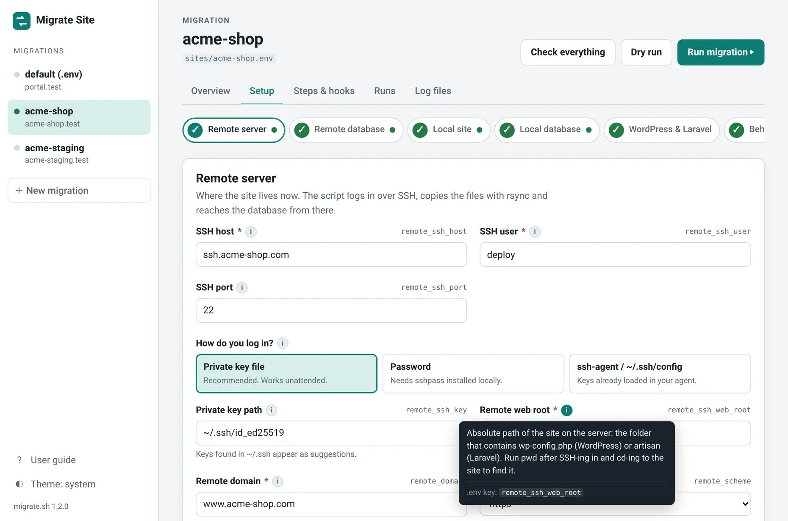
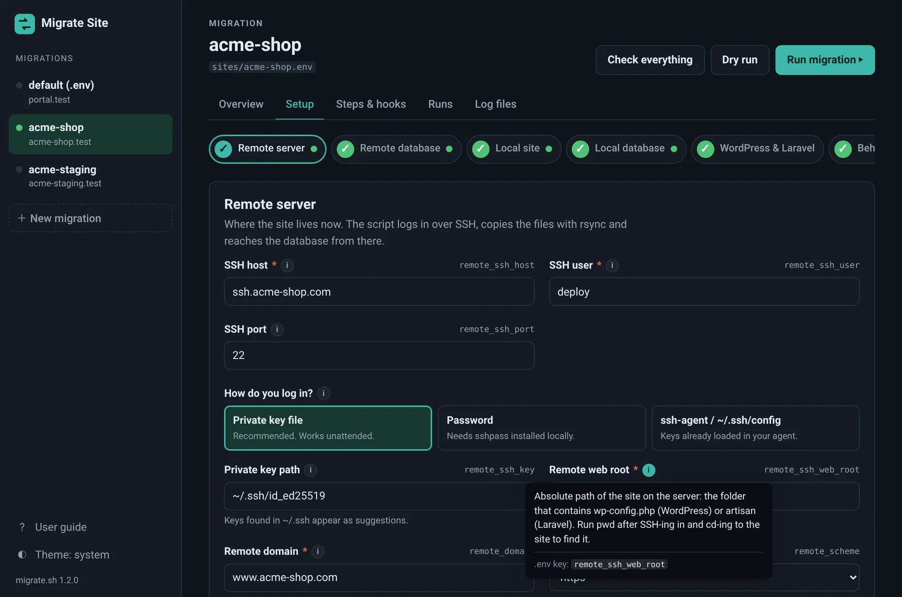
.env key on the right. The ⓘ button explains the field and shows the key and the default: hover, focus or click it.| Section | What you enter |
|---|---|
| Remote server | SSH host, user and port, how you log in (key file, password or ssh-agent), the remote web root and the live domain. Advanced holds the settings for hosts with a non-standard WordPress layout: Only sync this folder, WP-CLI folder and wp-config.php path. |
| Remote database | The credentials from wp-config.php or Laravel's .env on the server, and the export method: SSH tunnel or Dump on the server. |
| Local site | The folder to sync into, the local domain and scheme, the platform, what to copy and how. |
| Local database | The database that is replaced. It is backed up first unless you turn that off. Keep local data for tables preserves, say, wp_options across the import. |
| WordPress & Laravel | Local-only settings applied after the copy: environment type, debug mode, a local admin user, Laravel's APP_ENV. |
| Behaviour | Whether to keep going after a failed step, the database progress bars and the extra checks. Any key from .env.example without a field of its own appears under Advanced here. |
| Review & save | Everything on one page, changed values flagged, passwords masked, plus a final connection check. |
- The diagram of where files and the database go, and the URL rewrite preview, update as you type.
- The key field suggests the private keys found in
~/.sshand warns about a.pubfile or loose permissions. Risky choices (mirror mode, backup off) get a warning.
Changes stay in the browser until you press Save. The bar at the bottom shows how many are pending. Tests already use them; runs always use the saved file. Saving rewrites only the lines that changed, so comments and hand edits in the env file survive.
Test the connections
Each section has Test buttons, and the overview has them all with Test all. They run the script's own preflight checks (migrate.sh --test …) with the values on screen, saved or not. Tests only read: nothing changes on either server.
- SSH login
- Logs in without prompting and checks that the remote web root exists.
- Remote database
- Connects the way the run will, opening the tunnel for the tunnel method, and runs
SELECT 1. - Local database
- Logs in locally and checks that the database exists or will be created.
- Local web root
- The folder exists, or will be created, and is writable.
- Local tools
- ssh, rsync, mysql, mysqldump, wp or php: whatever the enabled steps need.
- Disk space
- The remote site's size against free local space. Part of Check everything.
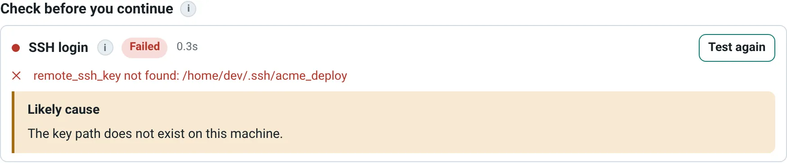
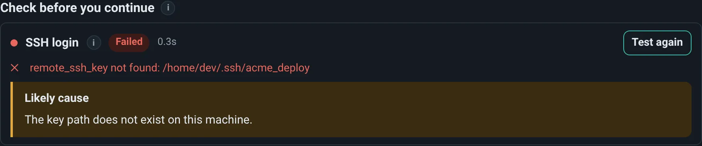
- A passed test turns the matching dot and arrow in the diagram green. If you change a value afterwards, the result is flagged as out of date.
- Password and passphrase prompts cannot be answered from a browser. Use a key file, a password (needs
sshpass), or keys already loaded inssh-agent.
Choose steps and add hooks
Steps & hooks lists every step in the order it runs. The switches are saved in the env file as skip_* and run_*, so terminal runs follow them too.

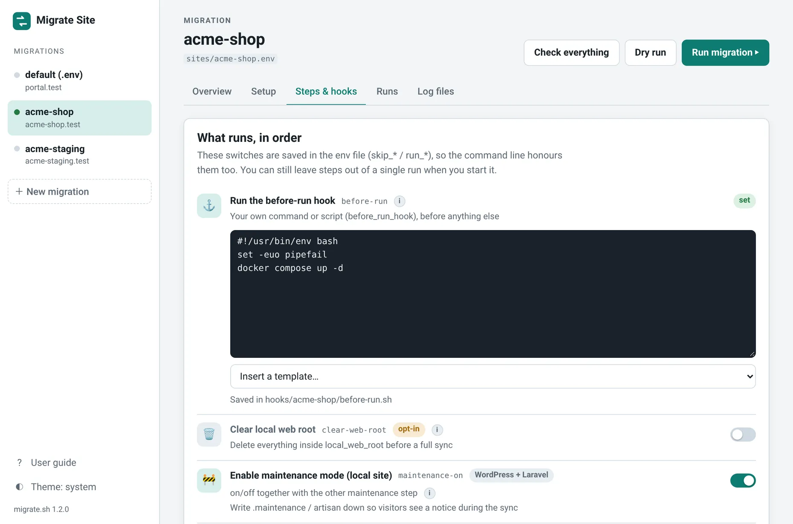
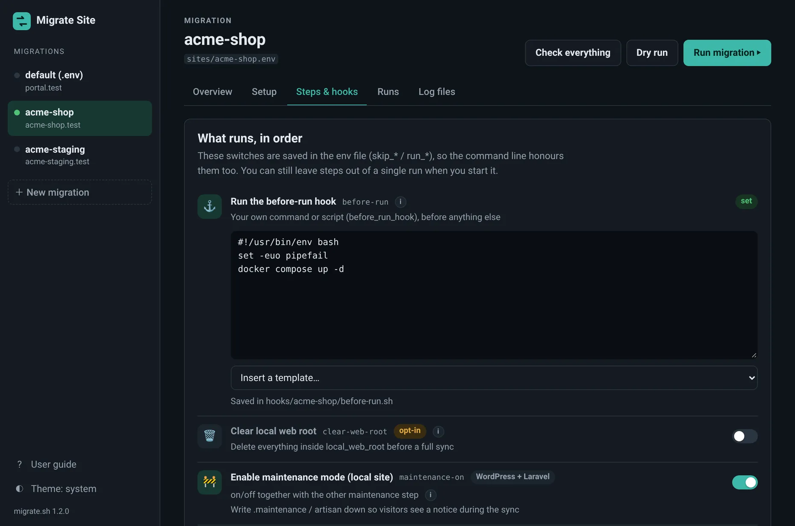
- Opt-in steps (Clear local web root, Install Kinsta MU plugins) are off until you enable them. Clearing the web root asks you to confirm when you enable it, and again on every run.
- Steps marked WordPress or Laravel are skipped on the other platform. The two maintenance steps switch on and off together.
Before-run and after-run hooks
Hooks are your own shell commands. before-run runs before everything else, after-run runs last. Type into the editor or insert a template: start Docker services, wait for the local database, stash local changes, activate development plugins, run Laravel migrations, build front-end assets, notify a webhook. Leave a hook empty to skip it.
- Saved as
hooks/<migration>/before-run.shandafter-run.sh(git-ignored). The env file points at them throughbefore_run_hookandafter_run_hook. - They run with
bashinside the local web root (the script folder if it does not exist yet), withUMS_*variables set. The page lists them under the steps. - A hook that exits non-zero fails its step. If an earlier step fails and Keep going after a failed step is off, the after-run hook does not run.
- During a dry run, hooks are printed, not run.
Start a run
The three buttons at the top of every migration page open the run dialog.
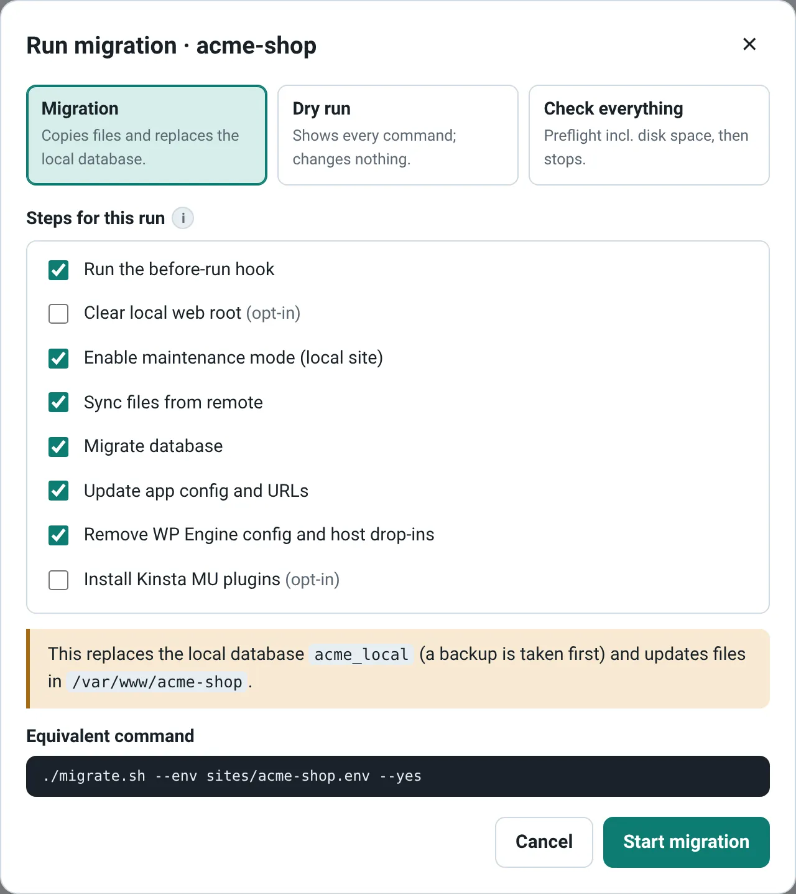
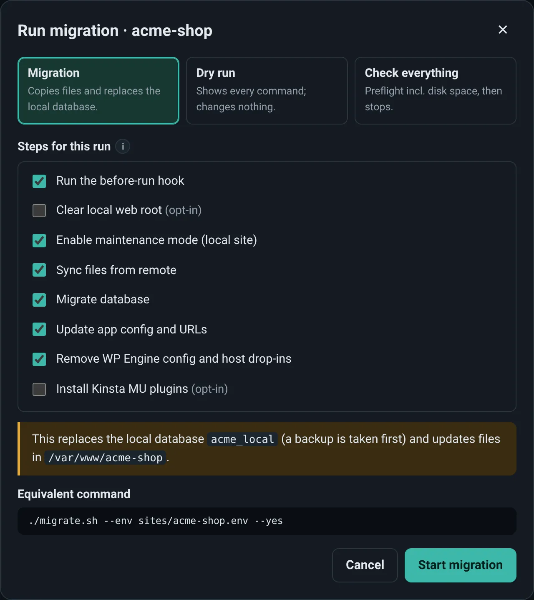
- Run migration
- The real thing: files are synced and the local database is replaced, after a backup.
- Dry run
- Runs the read-only parts (SSH, table listing,
rsync --dry-run) and prints every other command. Nothing changes. A good first run. - Check everything
- Every preflight check including disk space, then stops.
- Untick a step to leave it out of this run only. Tick an opt-in step to include it this once.
- The dialog shows the equivalent command as you change things.
- GUI runs are unattended (
--yes): nothing waits for an answer halfway through. - With Clear local web root ticked, you must type the folder's name before the run starts.
- Runs use the saved env file. With unsaved changes, the dialog offers to save them first.
Watch it run
Starting a run opens its live page. You can leave and come back; the run does not depend on the page staying open.

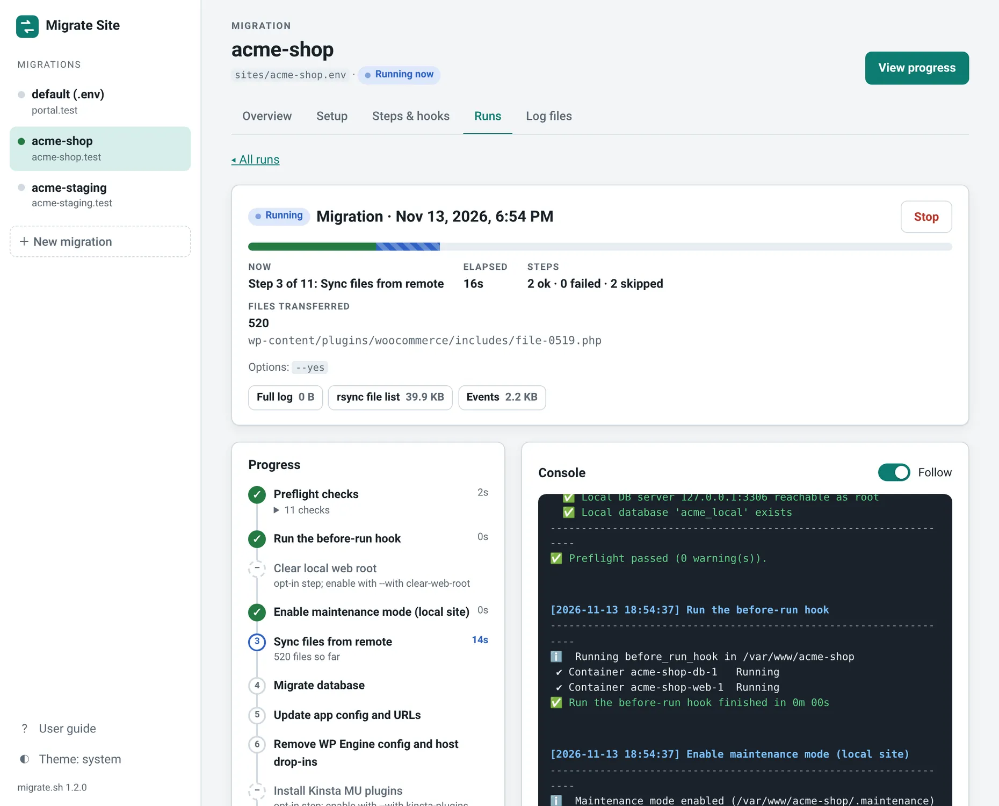
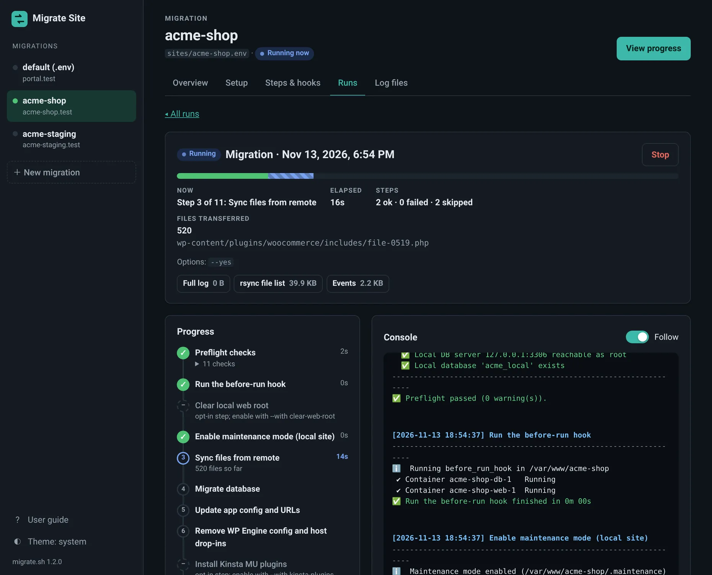
- A progress bar and a timeline of the preflight checks and every step, with a timer on the current one. Skipped steps say why.
- While files sync, the number of files rsync has transferred so far and the latest one.
- The console streams the script's output. Turn off Follow to scroll back while it runs.
- Stop works like Ctrl-C: the script closes the SSH tunnel, removes its temp files and warns if maintenance mode is still on. Only runs started from the GUI can be stopped here.
- When a run ends, the page keeps its timeline and console, shows the exit code, and links the full log, the report, the rsync file list and the events file. A failed step is marked red; its error is in the console on the lines starting with ❌.
Look back: run history and logs
The Runs tab lists every run of the migration, with status, type, duration, the options used and a strip showing each step's result. Runs started from a terminal are listed too.

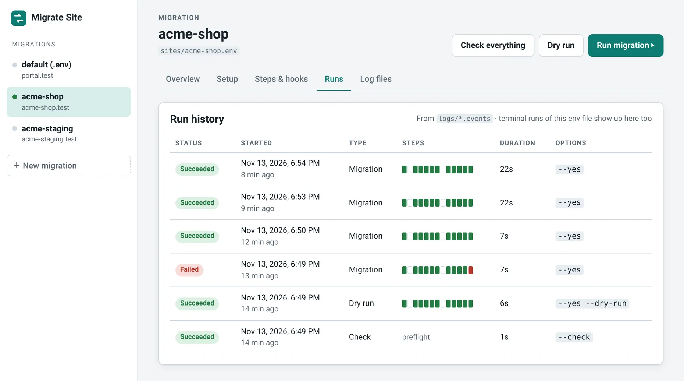
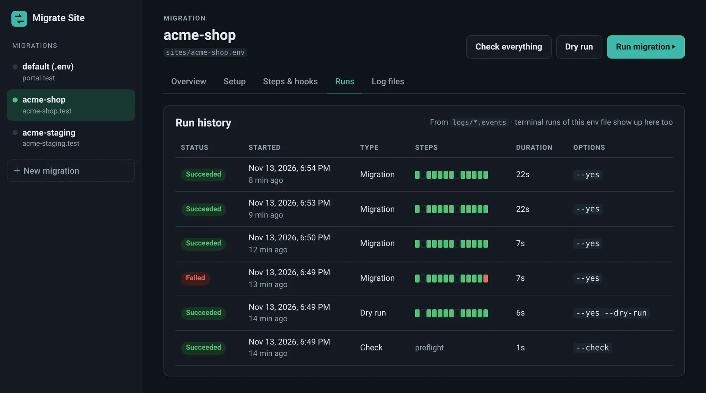
- Open a run for its timeline, console, full log, report (one line per step) and rsync file list.
- Log files lists everything in the log folder, older runs included. View any file with a line filter, or download it. The viewer shows the last 2 MB of a larger file.
- A run shows Interrupted when the script exited without its final event (killed, or the machine went to sleep), and Stopped when you stopped it.
History comes from the .events file the script writes next to each log (logs/migrate-<time>.events). The GUI keeps no database of its own.
One migration per site or environment
Each migration has its own credentials, steps, hooks and run history. The dot next to its name in the sidebar shows how its last run ended.
- They share the list files in
config/(exclude lists, domain pairs) unless a migration points at its own files in the Advanced fields. - One migration runs once at a time. Different migrations can run side by side.
- Delete migration, in the danger zone at the bottom of the overview, removes the env file after you type its name. Logs, dumps and hook scripts are kept.
The same thing from a terminal
Everything in the GUI has a command-line twin. The overview page of each migration shows the exact commands for it.
| In the GUI | On the command line |
|---|---|
| Test SSH and the databases | ./migrate.sh --test ssh,remote-db,local-db |
| Check everything | ./migrate.sh --check |
| Dry run | ./migrate.sh --yes --dry-run |
| Run migration | ./migrate.sh --yes |
| Untick a step for one run | --skip sync-files |
| Tick an opt-in step for one run | --with clear-web-root |
| Switch a step off for good | skip_file_sync='true' in the env file |
| Another migration | --env sites/<name>.env |
You can keep editing env files by hand. The GUI rereads the file every time it opens a migration, and saving changes only the lines you edited: comments and the order of keys stay as they were. For what each step and setting does, see the CLI guide.
Who can reach it
The GUI can read your credentials and start migrations, so it is built to answer only you.
This machine only
It listens on 127.0.0.1. Requests with a foreign Host header are rejected, which blocks DNS rebinding.
A token per launch
Each start creates a random token. The browser gets it from the printed link and sends it with every request, so other websites you visit cannot read or start anything.
Passwords stay in your files
Env files are mode 600 and git-ignored. The script passes passwords through stdin, environment variables or temporary option files, never on a command line.
On a remote machine
Keep the GUI bound to 127.0.0.1 and tunnel to it, then open the printed link on your own machine. Avoid --host 0.0.0.0: anyone who can reach the port and has the token could read your credentials and run migrations.
ssh -L 8765:127.0.0.1:8765 you@box # on your machine
./gui.sh --no-browser # on the boxWhen something looks off
GUI-specific problems. For errors from the migration itself, see troubleshooting in the CLI guide.
"Open the link from the terminal"
The page has no token, for example after the GUI was restarted or the page was opened in a new window. Open the link that ./gui.sh printed.
"The GUI needs python3"
Install Python 3.8 or newer. The command line works without it: ./migrate.sh --help.
The SSH test hangs, then fails
The GUI cannot answer password or passphrase prompts. Use a key without a passphrase, load it with ssh-add first, or use a password with sshpass installed. A test is cut off after 120 seconds.
The remote database fails with the tunnel method
The server may forbid TCP forwarding. Switch the export method to Dump on the server.
SSL errors from the database client
Set the client SSL flag under Advanced: --skip-ssl for a MariaDB client, --ssl-mode=DISABLED for a MySQL client.
"Process count of N exceeded maximum allowed value"
The host limits how many processes your account may run and stopped the script. Turn off Progress bars for the database (pv) under Behaviour, log in with a key file, and run while the site is quiet.
wp-config.php not found, or WP-CLI cannot find WordPress
The host keeps WordPress core outside the web root. Under Remote server → Advanced, set Only sync this folder (usually wp-content), WP-CLI folder and wp-config.php path.
A run shows "Interrupted"
The script exited without writing its final event. Check the log, and remove .maintenance or run php artisan up if the local site is still in maintenance mode.
"This migration is already running"
One migration runs once at a time. Open the running one from the Running now badge, or wait for it to finish.
The Stop button is missing
The run was started from a terminal. Stop it there with Ctrl-C.
A setting does not seem to apply
Check for unsaved changes (the bar at the bottom), and that the key is not set twice in the env file by hand.
"This env file has a shell syntax error"
bash could not load the file cleanly, usually an unbalanced quote from a hand edit. Open it in an editor and fix the quotes.
The same guide is built into the GUI: User guide at the bottom of the sidebar.